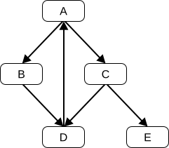

16 ECMAScript Language: Scripts and Modules
16.1 Scripts
Syntax
16.1.1 Static Semantics: Early Errors
-
It is a Syntax Error if the
LexicallyDeclaredNames ofScriptBody contains any duplicate entries. -
It is a Syntax Error if any element of the
LexicallyDeclaredNames ofScriptBody also occurs in theVarDeclaredNames ofScriptBody .
-
It is a Syntax Error if
StatementList Contains superunless the source text containingsuperis eval code that is being processed by adirect eval . Additionalearly error rules forsuperwithindirect eval are defined in19.2.1.1 . -
It is a Syntax Error if
StatementList Contains NewTarget unless the source text containingNewTarget is eval code that is being processed by adirect eval . Additionalearly error rules forNewTarget indirect eval are defined in19.2.1.1 . -
It is a Syntax Error if
ContainsDuplicateLabels ofStatementList with argument « » istrue . -
It is a Syntax Error if
ContainsUndefinedBreakTarget ofStatementList with argument « » istrue . -
It is a Syntax Error if
ContainsUndefinedContinueTarget ofStatementList with arguments « » and « » istrue . -
It is a Syntax Error if
AllPrivateIdentifiersValid ofStatementList with argument « » isfalse unless the source text containingScriptBody is eval code that is being processed by adirect eval . -
It is a Syntax Error if
ContainsUsing ofStatementList istrue .
16.1.2 Static Semantics: ScriptIsStrict
The
- If
ScriptBody is present and theDirective Prologue ofScriptBody contains aUse Strict Directive , returntrue . - Return
false .
16.1.3 Runtime Semantics: Evaluation
- Return
undefined .
16.1.4 Script Records
A Script Record encapsulates information about a script being evaluated. Each script record contains the fields listed in
| Field Name | Value Type | Meaning |
|---|---|---|
| [[Realm]] |
a |
The |
| [[ECMAScriptCode]] |
a |
The result of parsing the source text of this script. |
| [[LoadedModules]] |
a |
A map from the specifier strings imported by this script to the resolved |
| [[HostDefined]] |
anything (default value is |
Field reserved for use by |
16.1.5 ParseScript ( sourceText, realm, hostDefined )
The abstract operation ParseScript takes arguments sourceText (a String or a sequence of Unicode code points), realm (a
- Let script be
ParseText (sourceText,Script ). - If script is a
List of errors, return script. - Return
Script Record { [[Realm]]: realm, [[ECMAScriptCode]]: script, [[LoadedModules]]: « », [[HostDefined]]: hostDefined }.
An implementation may parse script source text and analyse it for Early Error conditions prior to evaluation of ParseScript for that script source text. However, the reporting of any errors must be deferred until the point where this specification actually performs ParseScript upon that source text.
16.1.6 ScriptEvaluation ( scriptRecord )
The abstract operation ScriptEvaluation takes argument scriptRecord (a
- Let globalEnv be scriptRecord.[[Realm]].[[GlobalEnv]].
- Let scriptContext be a new
ECMAScript code execution context . - Set the Function of scriptContext to
null . - Set the
Realm of scriptContext to scriptRecord.[[Realm]]. - Set the ScriptOrModule of scriptContext to scriptRecord.
- Set the VariableEnvironment of scriptContext to globalEnv.
- Set the LexicalEnvironment of scriptContext to globalEnv.
- Set the PrivateEnvironment of scriptContext to
null . - Suspend the
running execution context . - Push scriptContext onto the
execution context stack ; scriptContext is now therunning execution context . - Let scriptNode be scriptRecord.[[ECMAScriptCode]].
- Let result be
Completion (GlobalDeclarationInstantiation (scriptNode, globalEnv)). - If result is a
normal completion , then- Set result to
Completion (Evaluation of scriptNode). - If result is a
normal completion and result.[[Value]] isempty , then- Set result to
NormalCompletion (undefined ).
- Set result to
- Set result to
- Suspend scriptContext and remove it from the
execution context stack . Assert : Theexecution context stack is not empty.- Resume the context that is now on the top of the
execution context stack as therunning execution context . - Return ? result.
16.1.7 GlobalDeclarationInstantiation ( script, envRecord )
The abstract operation GlobalDeclarationInstantiation takes arguments script (a
When an
It performs the following steps when called:
- Let lexicalNames be the
LexicallyDeclaredNames of script. - Let variableNames be the
VarDeclaredNames of script. - For each element name of lexicalNames, do
- If
HasLexicalDeclaration (envRecord, name) istrue , throw aSyntaxError exception. - Let hasRestrictedGlobal be ?
HasRestrictedGlobalProperty (envRecord, name). NOTE : Globalvarandfunctionbindings (except those that are introduced by non-strictdirect eval ) are non-configurable and are therefore restricted global properties.- If hasRestrictedGlobal is
true , throw aSyntaxError exception.
- If
- For each element name of variableNames, do
- If
HasLexicalDeclaration (envRecord, name) istrue , throw aSyntaxError exception.
- If
- Let variableDecls be the
VarScopedDeclarations of script. - Let funcsToInitialize be a new empty
List . - Let declaredFuncNames be a new empty
List . - For each element variableDecl of variableDecls, in reverse
List order, do- If variableDecl is not either a
VariableDeclaration , aForBinding , or aBindingIdentifier , thenAssert : variableDecl is either aFunctionDeclaration , aGeneratorDeclaration , anAsyncFunctionDeclaration , or anAsyncGeneratorDeclaration .NOTE : If there are multiple function declarations for the same name, the last declaration is used.- Let funcName be the sole element of the
BoundNames of variableDecl. - If declaredFuncNames does not contain funcName, then
- Let funcDefinable be ?
CanDeclareGlobalFunction (envRecord, funcName). - If funcDefinable is
false , throw aTypeError exception. - Append funcName to declaredFuncNames.
- Insert variableDecl as the first element of funcsToInitialize.
- Let funcDefinable be ?
- If variableDecl is not either a
- Let declaredVariableNames be a new empty
List . - For each element variableDecl of variableDecls, do
- If variableDecl is either a
VariableDeclaration , aForBinding , or aBindingIdentifier , then- For each String name of the
BoundNames of variableDecl, do- If declaredFuncNames does not contain name, then
- Let variableDefinable be ?
CanDeclareGlobalVar (envRecord, name). - If variableDefinable is
false , throw aTypeError exception. - If declaredVariableNames does not contain name, then
- Append name to declaredVariableNames.
- Let variableDefinable be ?
- If declaredFuncNames does not contain name, then
- For each String name of the
- If variableDecl is either a
NOTE : No abnormal terminations occur after this algorithm step if theglobal object is anordinary object . However, if theglobal object is aProxy exotic object it may exhibit behaviours that cause abnormal terminations in some of the following steps.- If the
host is a web browser or otherwise supportsBlock-Level Function Declarations Web Legacy Compatibility Semantics , then- Let strict be
ScriptIsStrict of script. - If strict is
false , then- Let declaredFuncOrVariableNames be the
list-concatenation of declaredFuncNames and declaredVariableNames. - For each
FunctionDeclaration funcDecl that is directly contained in theStatementList of anyBlock ,CaseClause , orDefaultClause x such that scriptContains x istrue , do- Let funcName be the
StringValue of theBindingIdentifier of funcDecl. - If replacing the
FunctionDeclaration funcDecl with aVariableStatement that has funcName as aBindingIdentifier would not produce any Early Errors for script, then- If
HasLexicalDeclaration (envRecord, funcName) isfalse , then- Let funcDefinable be ?
CanDeclareGlobalVar (envRecord, funcName). - If funcDefinable is
true , thenNOTE : A var binding for funcName is only instantiated here if it is neither a VarDeclaredName nor the name of anotherFunctionDeclaration .- If declaredFuncOrVariableNames does not contain funcName, then
- Perform ?
CreateGlobalVarBinding (envRecord, funcName,false ). - Append funcName to declaredFuncOrVariableNames.
- Perform ?
- When the
FunctionDeclaration funcDecl is evaluated, perform the following steps in place of theFunctionDeclaration Evaluation algorithm provided in15.2.6 :- Let globalEnv be the
running execution context 's VariableEnvironment. - Let blockEnv be the
running execution context 's LexicalEnvironment. - Let funcObj be ! blockEnv.
GetBindingValue (funcName,false ). - Perform ? globalEnv.
SetMutableBinding (funcName, funcObj,false ). - Return
unused .
- Let globalEnv be the
- Let funcDefinable be ?
- If
- Let funcName be the
- Let declaredFuncOrVariableNames be the
- Let strict be
- Let lexicalDecls be the
LexicallyScopedDeclarations of script. - Let privateEnv be
null . - For each element lexicalDecl of lexicalDecls, do
NOTE : Lexically declared names are only instantiated here but not initialized.- For each element name of the
BoundNames of lexicalDecl, do- If
IsConstantDeclaration of lexicalDecl istrue , then- Perform ? envRecord.
CreateImmutableBinding (name,true ).
- Perform ? envRecord.
- Else,
- Perform ? envRecord.
CreateMutableBinding (name,false ).
- Perform ? envRecord.
- If
- For each
Parse Node funcDecl of funcsToInitialize, do- Let funcName be the sole element of the
BoundNames of funcDecl. - Let funcObj be
InstantiateFunctionObject of funcDecl with arguments envRecord and privateEnv. - Perform ?
CreateGlobalFunctionBinding (envRecord, funcName, funcObj,false ).
- Let funcName be the sole element of the
- For each String variableName of declaredVariableNames, do
- Perform ?
CreateGlobalVarBinding (envRecord, variableName,false ).
- Perform ?
- Return
unused .
Unlike explicit var or function declarations, properties that are directly created on the
16.2 Modules
Syntax
16.2.1 Module Semantics
16.2.1.1 Static Semantics: Early Errors
-
It is a Syntax Error if the
LexicallyDeclaredNames ofModuleItemList contains any duplicate entries. -
It is a Syntax Error if any element of the
LexicallyDeclaredNames ofModuleItemList also occurs in theVarDeclaredNames ofModuleItemList . -
It is a Syntax Error if the
ExportedNames ofModuleItemList contains any duplicate entries. -
It is a Syntax Error if any element of the
ExportedBindings ofModuleItemList does not also occur in either theVarDeclaredNames ofModuleItemList , or theLexicallyDeclaredNames ofModuleItemList . -
It is a Syntax Error if
ModuleItemList Contains super. -
It is a Syntax Error if
ModuleItemList Contains NewTarget . -
It is a Syntax Error if
ContainsDuplicateLabels ofModuleItemList with argument « » istrue . -
It is a Syntax Error if
ContainsUndefinedBreakTarget ofModuleItemList with argument « » istrue . -
It is a Syntax Error if
ContainsUndefinedContinueTarget ofModuleItemList with arguments « » and « » istrue . -
It is a Syntax Error if
AllPrivateIdentifiersValid ofModuleItemList with argument « » isfalse .
The duplicate export default
- It is a Syntax Error if
IsStringWellFormedUnicode (SV ofStringLiteral ) isfalse .
16.2.1.2 Static Semantics: ImportedLocalNames ( importEntries )
The abstract operation ImportedLocalNames takes argument importEntries (a
- Let localNames be a new empty
List . - For each
ImportEntry Record importEntry of importEntries, do- Append importEntry.[[LocalName]] to localNames.
- Return localNames.
16.2.1.3 ModuleRequest Records
A ModuleRequest Record represents the request to import a module with given import attributes. It consists of the following fields:
| Field Name | Value Type | Meaning |
|---|---|---|
| [[Specifier]] | a String | The module specifier |
| [[Attributes]] |
a |
The import attributes |
A LoadedModuleRequest Record represents the request to import a module together with the resulting
| Field Name | Value Type | Meaning |
|---|---|---|
| [[Specifier]] | a String | The module specifier |
| [[Attributes]] |
a |
The import attributes |
| [[Module]] |
a |
The loaded module corresponding to this module request |
An ImportAttribute Record consists of the following fields:
| Field Name | Value Type | Meaning |
|---|---|---|
| [[Key]] | a String | The attribute key |
| [[Value]] | a String | The attribute value |
16.2.1.3.1 ModuleRequestsEqual ( x, y )
The abstract operation ModuleRequestsEqual takes arguments x (a
- If x.[[Specifier]] is not y.[[Specifier]], return
false . - Let xAttrs be x.[[Attributes]].
- Let yAttrs be y.[[Attributes]].
- Let xAttrsCount be the number of elements in xAttrs.
- Let yAttrsCount be the number of elements in yAttrs.
- If xAttrsCount ≠ yAttrsCount, return
false . - For each
ImportAttribute Record xAttr of xAttrs, do- If yAttrs does not contain an
ImportAttribute Record yAttr such that xAttr.[[Key]] is yAttr.[[Key]] and xAttr.[[Value]] is yAttr.[[Value]], returnfalse .
- If yAttrs does not contain an
- Return
true .
16.2.1.4 Static Semantics: ModuleRequests
The
- Return a new empty
List .
- Return the
ModuleRequests ofModuleItem .
- Let requests be the
ModuleRequests ofModuleItemList . - Let additionalRequests be the
ModuleRequests ofModuleItem . - For each
ModuleRequest Record moduleRequest of additionalRequests, do- If requests does not contain a
ModuleRequest Record otherModuleRequest such thatModuleRequestsEqual (moduleRequest, otherModuleRequest) istrue , then- Append moduleRequest to requests.
- If requests does not contain a
- Return requests.
- Return a new empty
List .
- Let specifier be the
SV ofFromClause . - Return a
List whose sole element is theModuleRequest Record { [[Specifier]]: specifier, [[Attributes]]: « » }.
- Let specifier be the
SV ofFromClause . - Let attrs be
WithClauseToAttributes ofWithClause . - Return a
List whose sole element is theModuleRequest Record { [[Specifier]]: specifier, [[Attributes]]: attrs }.
- Let specifier be the
SV ofModuleSpecifier . - Return a
List whose sole element is theModuleRequest Record { [[Specifier]]: specifier, [[Attributes]]: « » }.
- Let specifier be the
SV ofModuleSpecifier . - Let attrs be
WithClauseToAttributes ofWithClause . - Return a
List whose sole element is theModuleRequest Record { [[Specifier]]: specifier, [[Attributes]]: attrs }.
- Let specifier be the
SV ofFromClause . - Return a
List whose sole element is theModuleRequest Record { [[Specifier]]: specifier, [[Attributes]]: « » }.
- Let specifier be the
SV ofFromClause . - Let attrs be
WithClauseToAttributes ofWithClause . - Return a
List whose sole element is theModuleRequest Record { [[Specifier]]: specifier, [[Attributes]]: attrs }.
- Return a new empty
List .
16.2.1.5 Abstract Module Records
A Module Record encapsulates structural information about the imports and exports of a single module. This information is used to link the imports and exports of sets of connected modules. A Module Record includes four fields that are only used when evaluating a module.
For specification purposes Module Records are values of the
Module Record defines the fields listed in
| Field Name | Value Type | Meaning |
|---|---|---|
| [[Realm]] |
a |
The |
| [[Environment]] |
a |
The |
| [[Namespace]] |
an Object or |
The Module Namespace Object ( |
| [[HostDefined]] |
anything (default value is |
Field reserved for use by |
| Method | Purpose | Definitions |
|---|---|---|
| LoadRequestedModules ( [ hostDefined ] ) | The abstract method LoadRequestedModules takes optional argument hostDefined (anything) and returns a Promise. It prepares the module for linking by recursively loading all its dependencies. |
Within this specification it has definitions in the following types; |
| GetExportedNames ( [ exportStarSet ] ) | The abstract method GetExportedNames takes optional argument exportStarSet (a It returns a list of all names that are either directly or indirectly exported from this module. |
Within this specification it has definitions in the following types; |
| ResolveExport ( exportName [ , resolveSet ] ) | The abstract method ResolveExport takes argument exportName (a String) and optional argument resolveSet (a It returns the binding of a name exported by this module. Bindings are represented by a ResolvedBinding Record, of the form { [[Module]]: Each time this operation is called with a specific exportName, resolveSet pair as arguments it must return the same result. |
Within this specification it has definitions in the following types; |
| Link ( ) | The abstract method Link takes no arguments and returns either a It prepares the module for evaluation by transitively resolving all module dependencies and creating a |
Within this specification it has definitions in the following types; |
| Evaluate ( ) | The abstract method Evaluate takes no arguments and returns a Promise. It returns a promise for the evaluation of this module and its dependencies, resolving on successful evaluation or if it has already been evaluated successfully, and rejecting for an evaluation error or if it has already been evaluated unsuccessfully. If the promise is rejected, |
Within this specification it has definitions in the following types; |
16.2.1.5.1 EvaluateModuleSync ( module )
The abstract operation EvaluateModuleSync takes argument module (a
Assert : module is not aCyclic Module Record .- Let promise be module.
Evaluate (). Assert : promise.[[PromiseState]] is eitherfulfilled orrejected .- If promise.[[PromiseState]] is
rejected , then- If promise.[[PromiseIsHandled]] is
false , performHostPromiseRejectionTracker (promise,"handle" ). - Set promise.[[PromiseIsHandled]] to
true . - Throw promise.[[PromiseResult]].
- If promise.[[PromiseIsHandled]] is
- Return
unused .
16.2.1.6 Cyclic Module Records
A Cyclic Module Record is used to represent information about a module that can participate in dependency cycles with other modules that are subclasses of the
In addition to the fields defined in
| Field Name | Value Type | Meaning |
|---|---|---|
| [[Status]] |
|
Initially |
| [[EvaluationError]] |
a |
A |
| [[DFSAncestorIndex]] |
an |
Auxiliary field used during |
| [[RequestedModules]] |
a |
A |
| [[LoadedModules]] |
a |
A map from the specifier strings used by the module represented by this record to request the importation of a module with the relative import attributes to the resolved |
| [[CycleRoot]] |
a |
The first visited module of the cycle, the root DFS ancestor of the strongly connected component. For a module not in a cycle, this would be the module itself. Once |
| [[HasTLA]] | a Boolean |
Whether this module is individually asynchronous (for example, if it's a |
| [[AsyncEvaluationOrder]] |
|
This field is initially set to |
| [[TopLevelCapability]] |
a |
If this module is the [[CycleRoot]] of some cycle, and |
| [[AsyncParentModules]] |
a |
If this module or a dependency has [[HasTLA]] |
| [[PendingAsyncDependencies]] |
an |
If this module has any asynchronous dependencies, this tracks the number of asynchronous dependency modules remaining to execute for this module. A module with asynchronous dependencies will be executed when this field reaches 0 and there are no execution errors. |
In addition to the methods defined in
| Method | Purpose | Definitions |
|---|---|---|
| InitializeEnvironment ( ) | The abstract method InitializeEnvironment takes no arguments and returns either a |
Within this specification it has definitions in the following types; |
| ExecuteModule ( [ capability ] ) | The abstract method ExecuteModule takes optional argument capability (a |
Within this specification it has definitions in the following types; |
A GraphLoadingState Record is a
| Field Name | Value Type | Meaning |
|---|---|---|
| [[PromiseCapability]] |
a |
The promise to resolve when the loading process finishes. |
| [[IsLoading]] | a Boolean | It is true if the loading process has not finished yet, neither successfully nor with an error. |
| [[PendingModulesCount]] |
a non-negative |
It tracks the number of pending |
| [[Visited]] |
a |
It is a list of the |
| [[HostDefined]] |
anything (default value is |
It contains |
16.2.1.6.1 Implementation of Module Record Abstract Methods
The following are the concrete methods for
16.2.1.6.1.1 LoadRequestedModules ( [ hostDefined ] )
The
- If hostDefined is not present, set hostDefined to
empty . - Let promiseCapability be !
NewPromiseCapability (%Promise% ). - Let state be the
GraphLoadingState Record { [[IsLoading]]:true , [[PendingModulesCount]]: 1, [[Visited]]: « », [[PromiseCapability]]: promiseCapability, [[HostDefined]]: hostDefined }. - Perform
InnerModuleLoading (state, module). - Return promiseCapability.[[Promise]].
<link rel="preload" as="..."> tags.
import() expressions never set the hostDefined parameter.
16.2.1.6.1.1.1 InnerModuleLoading ( state, module )
The abstract operation InnerModuleLoading takes arguments state (a
Assert : state.[[IsLoading]] istrue .- If module is a
Cyclic Module Record , module.[[Status]] isnew , and state.[[Visited]] does not contain module, then- Append module to state.[[Visited]].
- Let requestedModulesCount be the number of elements in module.[[RequestedModules]].
- Set state.[[PendingModulesCount]] to state.[[PendingModulesCount]] + requestedModulesCount.
- For each
ModuleRequest Record request of module.[[RequestedModules]], do- If
AllImportAttributesSupported (request.[[Attributes]]) isfalse , then- Let error be
ThrowCompletion (a newly createdSyntaxError object). - Perform
ContinueModuleLoading (state, error).
- Let error be
- Else if module.[[LoadedModules]] contains a
LoadedModuleRequest Record record such thatModuleRequestsEqual (record, request) istrue , then- Perform
InnerModuleLoading (state, record.[[Module]]).
- Perform
- Else,
- Perform
HostLoadImportedModule (module, request, state.[[HostDefined]], state). NOTE :HostLoadImportedModule will callFinishLoadingImportedModule , which re-enters the graph loading process throughContinueModuleLoading .
- Perform
- If state.[[IsLoading]] is
false , returnunused .
- If
Assert : state.[[PendingModulesCount]] ≥ 1.- Set state.[[PendingModulesCount]] to state.[[PendingModulesCount]] - 1.
- If state.[[PendingModulesCount]] = 0, then
- Set state.[[IsLoading]] to
false . - For each
Cyclic Module Record loaded of state.[[Visited]], do- If loaded.[[Status]] is
new , set loaded.[[Status]] tounlinked .
- If loaded.[[Status]] is
- Perform !
Call (state.[[PromiseCapability]].[[Resolve]],undefined , «undefined »).
- Set state.[[IsLoading]] to
- Return
unused .
16.2.1.6.1.1.2 ContinueModuleLoading ( state, moduleCompletion )
The abstract operation ContinueModuleLoading takes arguments state (a
- If state.[[IsLoading]] is
false , returnunused . - If moduleCompletion is a
normal completion , then- Perform
InnerModuleLoading (state, moduleCompletion.[[Value]]).
- Perform
- Else,
- Set state.[[IsLoading]] to
false . - Perform !
Call (state.[[PromiseCapability]].[[Reject]],undefined , « moduleCompletion.[[Value]] »).
- Set state.[[IsLoading]] to
- Return
unused .
16.2.1.6.1.2 Link ( )
The
Assert : module.[[Status]] is one ofunlinked ,linked ,evaluating-async , orevaluated .- Let stack be a new empty
List . - Let result be
Completion (InnerModuleLinking (module, stack, 0)). - If result is an
abrupt completion , then- For each
Cyclic Module Record requiredModule of stack, doAssert : requiredModule.[[Status]] islinking .- Set requiredModule.[[Status]] to
unlinked .
Assert : module.[[Status]] isunlinked .- Return ? result.
- For each
Assert : module.[[Status]] is one oflinked ,evaluating-async , orevaluated .Assert : stack is empty.- Return
unused .
16.2.1.6.1.2.1 InnerModuleLinking ( module, stack, index )
The abstract operation InnerModuleLinking takes arguments module (a
- If module is not a
Cyclic Module Record , then- Perform ? module.
Link (). - Return index.
- Perform ? module.
- If module.[[Status]] is one of
linking ,linked ,evaluating-async , orevaluated , then- Return index.
Assert : module.[[Status]] isunlinked .- Set module.[[Status]] to
linking . - Let moduleIndex be index.
- Set module.[[DFSAncestorIndex]] to index.
- Set index to index + 1.
- Append module to stack.
- For each
ModuleRequest Record request of module.[[RequestedModules]], do- Let requiredModule be
GetImportedModule (module, request). - Set index to ?
InnerModuleLinking (requiredModule, stack, index). - If requiredModule is a
Cyclic Module Record , thenAssert : requiredModule.[[Status]] is one oflinking ,linked ,evaluating-async , orevaluated .Assert : requiredModule.[[Status]] islinking if and only if stack contains requiredModule.- If requiredModule.[[Status]] is
linking , then- Set module.[[DFSAncestorIndex]] to
min (module.[[DFSAncestorIndex]], requiredModule.[[DFSAncestorIndex]]).
- Set module.[[DFSAncestorIndex]] to
- Let requiredModule be
- Perform ? module.
InitializeEnvironment (). Assert : module occurs exactly once in stack.Assert : module.[[DFSAncestorIndex]] ≤ moduleIndex.- If module.[[DFSAncestorIndex]] = moduleIndex, then
- Let done be
false . - Repeat, while done is
false ,- Let requiredModule be the last element of stack.
- Remove the last element of stack.
Assert : requiredModule is aCyclic Module Record .- Set requiredModule.[[Status]] to
linked . - If requiredModule and module are the same
Module Record , set done totrue .
- Let done be
- Return index.
16.2.1.6.1.3 Evaluate ( )
The
Assert : This call toEvaluate is not happening at the same time as another call toEvaluate within thesurrounding agent .Assert : module.[[Status]] is one oflinked ,evaluating-async , orevaluated .- If module.[[Status]] is either
evaluating-async orevaluated , then- If module.[[CycleRoot]] is not
empty , then- Set module to module.[[CycleRoot]].
- Else,
Assert : module.[[Status]] isevaluated and module.[[EvaluationError]] is athrow completion .
- If module.[[CycleRoot]] is not
- If module.[[TopLevelCapability]] is not
empty , then- Return module.[[TopLevelCapability]].[[Promise]].
- Let stack be a new empty
List . - Let promiseCapability be !
NewPromiseCapability (%Promise% ). - Set module.[[TopLevelCapability]] to promiseCapability.
- Let result be
Completion (InnerModuleEvaluation (module, stack, 0)). - If result is an
abrupt completion , then- For each
Cyclic Module Record requiredModule of stack, doAssert : requiredModule.[[Status]] isevaluating .- Set requiredModule.[[Status]] to
evaluated . - Set requiredModule.[[EvaluationError]] to result.
Assert : module.[[Status]] isevaluated .Assert : module.[[EvaluationError]] and result are the sameCompletion Record .- Perform !
Call (promiseCapability.[[Reject]],undefined , « result.[[Value]] »).
- For each
- Else,
- Return promiseCapability.[[Promise]].
16.2.1.6.1.3.1 InnerModuleEvaluation ( module, stack, index )
The abstract operation InnerModuleEvaluation takes arguments module (a
- If module is not a
Cyclic Module Record , then- Perform ?
EvaluateModuleSync (module). - Return index.
- Perform ?
- If module.[[Status]] is either
evaluating-async orevaluated , then- If module.[[EvaluationError]] is
empty , return index. - Return ? module.[[EvaluationError]].
- If module.[[EvaluationError]] is
- If module.[[Status]] is
evaluating , return index. Assert : module.[[Status]] islinked .- Set module.[[Status]] to
evaluating . - Let moduleIndex be index.
- Set module.[[DFSAncestorIndex]] to index.
- Set module.[[PendingAsyncDependencies]] to 0.
- Set index to index + 1.
- Append module to stack.
- For each
ModuleRequest Record request of module.[[RequestedModules]], do- Let requiredModule be
GetImportedModule (module, request). - Set index to ?
InnerModuleEvaluation (requiredModule, stack, index). - If requiredModule is a
Cyclic Module Record , thenAssert : requiredModule.[[Status]] is one ofevaluating ,evaluating-async , orevaluated .Assert : requiredModule.[[Status]] isevaluating if and only if stack contains requiredModule.- If requiredModule.[[Status]] is
evaluating , then- Set module.[[DFSAncestorIndex]] to
min (module.[[DFSAncestorIndex]], requiredModule.[[DFSAncestorIndex]]).
- Set module.[[DFSAncestorIndex]] to
- Else,
- Set requiredModule to requiredModule.[[CycleRoot]].
Assert : requiredModule.[[Status]] is eitherevaluating-async orevaluated .- If requiredModule.[[EvaluationError]] is not
empty , return ? requiredModule.[[EvaluationError]].
- If requiredModule.[[AsyncEvaluationOrder]] is an
integer , then- Set module.[[PendingAsyncDependencies]] to module.[[PendingAsyncDependencies]] + 1.
- Append module to requiredModule.[[AsyncParentModules]].
- Let requiredModule be
- If module.[[HasTLA]] is
true or module.[[PendingAsyncDependencies]] > 0, thenAssert : module.[[AsyncEvaluationOrder]] isunset .- Set module.[[AsyncEvaluationOrder]] to
IncrementModuleAsyncEvaluationCount (). - If module.[[PendingAsyncDependencies]] = 0, perform
ExecuteAsyncModule (module).
- Else,
- Perform ? module.
ExecuteModule ().
- Perform ? module.
Assert : module occurs exactly once in stack.Assert : module.[[DFSAncestorIndex]] ≤ moduleIndex.- If module.[[DFSAncestorIndex]] = moduleIndex, then
- Let done be
false . - Repeat, while done is
false ,- Let requiredModule be the last element of stack.
- Remove the last element of stack.
Assert : requiredModule is aCyclic Module Record .Assert : requiredModule.[[AsyncEvaluationOrder]] is either aninteger orunset .- If requiredModule.[[AsyncEvaluationOrder]] is
unset , set requiredModule.[[Status]] toevaluated . - Else, set requiredModule.[[Status]] to
evaluating-async . - If requiredModule and module are the same
Module Record , set done totrue . - Set requiredModule.[[CycleRoot]] to module.
- Let done be
- Return index.
A module is
Any modules depending on a module of an asynchronous cycle when that cycle is not
16.2.1.6.1.3.2 ExecuteAsyncModule ( module )
The abstract operation ExecuteAsyncModule takes argument module (a
Assert : module.[[Status]] is eitherevaluating orevaluating-async .Assert : module.[[HasTLA]] istrue .- Let promiseCapability be !
NewPromiseCapability (%Promise% ). - Let fulfilledClosure be a new
Abstract Closure with no parameters that captures module and performs the following steps when called:- Perform
AsyncModuleExecutionFulfilled (module). - Return
NormalCompletion (undefined ).
- Perform
- Let onFulfilled be
CreateBuiltinFunction (fulfilledClosure, 0,"" , « »). - Let rejectedClosure be a new
Abstract Closure with parameters (error) that captures module and performs the following steps when called:- Perform
AsyncModuleExecutionRejected (module, error). - Return
NormalCompletion (undefined ).
- Perform
- Let onRejected be
CreateBuiltinFunction (rejectedClosure, 0,"" , « »). - Perform
PerformPromiseThen (promiseCapability.[[Promise]], onFulfilled, onRejected). - Perform ! module.
ExecuteModule (promiseCapability). - Return
unused .
16.2.1.6.1.3.3 GatherAvailableAncestors ( module, execList )
The abstract operation GatherAvailableAncestors takes arguments module (a
- For each
Cyclic Module Record ancestorModule of module.[[AsyncParentModules]], do- If execList does not contain ancestorModule and ancestorModule.[[CycleRoot]].[[EvaluationError]] is
empty , thenAssert : ancestorModule.[[Status]] isevaluating-async .Assert : ancestorModule.[[EvaluationError]] isempty .Assert : ancestorModule.[[AsyncEvaluationOrder]] is aninteger .Assert : ancestorModule.[[PendingAsyncDependencies]] > 0.- Set ancestorModule.[[PendingAsyncDependencies]] to ancestorModule.[[PendingAsyncDependencies]] - 1.
- If ancestorModule.[[PendingAsyncDependencies]] = 0, then
- Append ancestorModule to execList.
- If ancestorModule.[[HasTLA]] is
false , performGatherAvailableAncestors (ancestorModule, execList).
- If execList does not contain ancestorModule and ancestorModule.[[CycleRoot]].[[EvaluationError]] is
- Return
unused .
When an asynchronous execution for a root module is fulfilled, this function determines the list of modules which are able to synchronously execute together on this completion, populating them in execList.
16.2.1.6.1.3.4 AsyncModuleExecutionFulfilled ( module )
The abstract operation AsyncModuleExecutionFulfilled takes argument module (a
- If module.[[Status]] is
evaluated , thenAssert : module.[[EvaluationError]] is notempty .- Return
unused .
Assert : module.[[Status]] isevaluating-async .Assert : module.[[AsyncEvaluationOrder]] is aninteger .Assert : module.[[EvaluationError]] isempty .- Set module.[[AsyncEvaluationOrder]] to
done . - Set module.[[Status]] to
evaluated . - If module.[[TopLevelCapability]] is not
empty , thenAssert : module.[[CycleRoot]] and module are the sameModule Record .- Perform !
Call (module.[[TopLevelCapability]].[[Resolve]],undefined , «undefined »).
- Let execList be a new empty
List . - Perform
GatherAvailableAncestors (module, execList). Assert : All elements of execList have their [[AsyncEvaluationOrder]] field set to aninteger , [[PendingAsyncDependencies]] field set to 0, and [[EvaluationError]] field set toempty .- Let sortedExecList be a
List whose elements are the elements of execList, sorted by their [[AsyncEvaluationOrder]] field in ascending order. - For each
Cyclic Module Record ancestorModule of sortedExecList, do- If ancestorModule.[[Status]] is
evaluated , thenAssert : ancestorModule.[[EvaluationError]] is notempty .
- Else if ancestorModule.[[HasTLA]] is
true , then- Perform
ExecuteAsyncModule (ancestorModule).
- Perform
- Else,
- Let result be
Completion (ancestorModule.ExecuteModule ()). - If result is an
abrupt completion , then- Perform
AsyncModuleExecutionRejected (ancestorModule, result.[[Value]]).
- Perform
- Else,
- Set ancestorModule.[[AsyncEvaluationOrder]] to
done . - Set ancestorModule.[[Status]] to
evaluated . - If ancestorModule.[[TopLevelCapability]] is not
empty , thenAssert : ancestorModule.[[CycleRoot]] and ancestorModule are the sameModule Record .- Perform !
Call (ancestorModule.[[TopLevelCapability]].[[Resolve]],undefined , «undefined »).
- Set ancestorModule.[[AsyncEvaluationOrder]] to
- Let result be
- If ancestorModule.[[Status]] is
- Return
unused .
16.2.1.6.1.3.5 AsyncModuleExecutionRejected ( module, error )
The abstract operation AsyncModuleExecutionRejected takes arguments module (a
- If module.[[Status]] is
evaluated , thenAssert : module.[[EvaluationError]] is notempty .- Return
unused .
Assert : module.[[Status]] isevaluating-async .Assert : module.[[AsyncEvaluationOrder]] is aninteger .Assert : module.[[EvaluationError]] isempty .- Set module.[[EvaluationError]] to
ThrowCompletion (error). - Set module.[[Status]] to
evaluated . - Set module.[[AsyncEvaluationOrder]] to
done . NOTE : module.[[AsyncEvaluationOrder]] is set todone for symmetry withAsyncModuleExecutionFulfilled . InInnerModuleEvaluation , the value of a module's [[AsyncEvaluationOrder]] internal slot is unused when its [[EvaluationError]] internal slot is notempty .- If module.[[TopLevelCapability]] is not
empty , thenAssert : module.[[CycleRoot]] and module are the sameModule Record .- Perform !
Call (module.[[TopLevelCapability]].[[Reject]],undefined , « error »).
- For each
Cyclic Module Record ancestorModule of module.[[AsyncParentModules]], do- Perform
AsyncModuleExecutionRejected (ancestorModule, error).
- Perform
- Return
unused .
16.2.1.6.2 Example Cyclic Module Record Graphs
This non-normative section gives a series of examples of the linking and evaluation of a few common module graphs, with a specific focus on how errors can occur.
First consider the following simple module graph:

Let's first assume that there are no error conditions. When a
Consider then cases involving linking errors, after a successful call to A.
Finally, consider a case involving evaluation errors after a successful call to
Now consider a different type of error condition:

In this scenario, module A declares a dependency on some other module, but no
The difference here between loading, linking and evaluation errors is due to the following characteristic:
Evaluation must be only performed once, as it can cause side effects; it is thus important to remember whether evaluation has already been performed, even if unsuccessfully. (In the error case, it makes sense to also remember the exception because otherwise subsequentEvaluate () calls would have to synthesize a new one.)- Linking, on the other hand, is side-effect-free, and thus even if it fails, it can be retried at a later time with no issues.
- Loading closely interacts with the
host , and it may be desirable for some of them to allow users to retry failed loads (for example, if the failure is caused by temporarily bad network conditions).
Now, consider a module graph with a cycle:

Here we assume that the entry point is module A, so that the
Then the
An analogous story occurs for the evaluation phase of a cyclic module graph, in the success case.
Now consider a case where A has a linking error; for example, it tries to import a binding from C that does not exist. In that case, the above steps still occur, including the early return from the second call to
Alternatively, consider a case where A has an evaluation error; for example, its source code throws an exception. In that case, the evaluation-time analogue of the above steps still occurs, including the early return from the second call to await through the whole dependency graph through the
Lastly, consider a module graph with a cycle, where all modules complete asynchronously:

Loading and linking happen as before, and all modules end up with [[Status]] set to
Calling A.
|
Field
|
A | B | C | D | E |
|---|---|---|---|---|---|
| [[DFSAncestorIndex]] | 0 | 0 | 0 | 0 | 4 |
| [[Status]] | |||||
| [[AsyncEvaluationOrder]] | 4 | 1 | 3 | 0 | 2 |
| [[AsyncParentModules]] | « » | « A » | « A » | « B, C » | « C » |
| [[PendingAsyncDependencies]] | 2 (B and C) | 1 (D) | 2 (D and E) | 0 | 0 |
Let us assume that E finishes executing first. When that happens,
|
Field
|
C | E |
|---|---|---|
| [[DFSAncestorIndex]] | 0 | 4 |
| [[Status]] | ||
| [[AsyncEvaluationOrder]] | 3 | |
| [[AsyncParentModules]] | « A » | « C » |
| [[PendingAsyncDependencies]] | 1 (D) | 0 |
D is next to finish (as it was the only module that was still executing). When that happens, await). The fields of the updated modules are as given in
|
Field
|
B | C | D |
|---|---|---|---|
| [[DFSAncestorIndex]] | 0 | 0 | 0 |
| [[Status]] | |||
| [[AsyncEvaluationOrder]] | 1 | 3 | |
| [[AsyncParentModules]] | « A » | « A » | « B, C » |
| [[PendingAsyncDependencies]] | 0 | 0 | 0 |
Let us assume that C finishes executing next. When that happens,
|
Field
|
A | C |
|---|---|---|
| [[DFSAncestorIndex]] | 0 | 0 |
| [[Status]] | ||
| [[AsyncEvaluationOrder]] | 4 | |
| [[AsyncParentModules]] | « » | « A » |
| [[PendingAsyncDependencies]] | 1 (B) | 0 |
Then, B finishes executing. When that happens,
|
Field
|
A | B |
|---|---|---|
| [[DFSAncestorIndex]] | 0 | 0 |
| [[Status]] | ||
| [[AsyncEvaluationOrder]] | 4 | |
| [[AsyncParentModules]] | « » | « A » |
| [[PendingAsyncDependencies]] | 0 | 0 |
Finally, A finishes executing. When that happens,
|
Field
|
A |
|---|---|
| [[DFSAncestorIndex]] | 0 |
| [[Status]] | |
| [[AsyncEvaluationOrder]] | |
| [[AsyncParentModules]] | « » |
| [[PendingAsyncDependencies]] | 0 |
Alternatively, consider a failure case where C fails execution and returns an error before B has finished executing. When that happens,
|
Field
|
A | C |
|---|---|---|
| [[DFSAncestorIndex]] | 0 | 0 |
| [[Status]] | ||
| [[AsyncEvaluationOrder]] | ||
| [[AsyncParentModules]] | « » | « A » |
| [[PendingAsyncDependencies]] | 1 (B) | 0 |
| [[EvaluationError]] | C's evaluation error |
A will be rejected with the same error as C since C will call
|
Field
|
A |
|---|---|
| [[DFSAncestorIndex]] | 0 |
| [[Status]] | |
| [[AsyncEvaluationOrder]] | |
| [[AsyncParentModules]] | « » |
| [[PendingAsyncDependencies]] | 0 |
| [[EvaluationError]] | C's |
Then, B finishes executing without an error. When that happens,
|
Field
|
A | B |
|---|---|---|
| [[DFSAncestorIndex]] | 0 | 0 |
| [[Status]] | ||
| [[AsyncEvaluationOrder]] | 4 | 1 |
| [[AsyncParentModules]] | « » | « A » |
| [[PendingAsyncDependencies]] | 0 | 0 |
| [[EvaluationError]] | C's |
16.2.1.7 Source Text Module Records
A Source Text Module Record is used to represent information about a module that was defined from
A
In addition to the fields defined in
| Field Name | Value Type | Meaning |
|---|---|---|
| [[ECMAScriptCode]] |
a |
The result of parsing the source text of this module using |
| [[Context]] |
an |
The |
| [[ImportMeta]] |
an Object or |
An object exposed through the import.meta meta property. It is |
| [[ImportEntries]] |
a |
A |
| [[LocalExportEntries]] |
a |
A |
| [[IndirectExportEntries]] |
a |
A export * as namespace declarations.
|
| [[StarExportEntries]] |
a |
A export * declarations that occur within the module, not including export * as namespace declarations.
|
An ImportEntry Record is a
| Field Name | Value Type | Meaning |
|---|---|---|
| [[ModuleRequest]] |
a |
|
| [[ImportName]] |
a String or |
The name under which the desired binding is exported by the module identified by [[ModuleRequest]]. The value |
| [[LocalName]] | a String | The name that is used to locally access the imported value from within the importing module. |
| Import Statement Form | [[ModuleRequest]] | [[ImportName]] | [[LocalName]] |
|---|---|---|---|
import v from "mod";
|
|
|
|
import * as ns from "mod";
|
|
|
|
import {x} from "mod";
|
|
|
|
import {x as v} from "mod";
|
|
|
|
import "mod";
|
An |
||
An ExportEntry Record is a
| Field Name | Value Type | Meaning |
|---|---|---|
| [[ExportName]] |
a String or |
The name used to export this binding by this module. |
| [[ModuleRequest]] |
a |
The |
| [[ImportName]] |
a String, |
The name under which the desired binding is exported by the module identified by [[ModuleRequest]]. export * as ns from "mod" declarations. export * from "mod" declarations.
|
| [[LocalName]] |
a String or |
The name that is used to locally access the exported value from within the importing module. |
| Export Statement Form | [[ExportName]] | [[ModuleRequest]] | [[ImportName]] | [[LocalName]] |
|---|---|---|---|---|
export var v;
|
|
|
|
|
export default function f() {}
|
|
|
|
|
export default function () {}
|
|
|
|
|
export default 42;
|
|
|
|
|
export {x};
|
|
|
|
|
export {v as x};
|
|
|
|
|
export {x} from "mod";
|
|
|
|
|
export {v as x} from "mod";
|
|
|
|
|
export * from "mod";
|
|
|
|
|
export * as ns from "mod";
|
|
|
|
|
The following definitions specify the required concrete methods and other
16.2.1.7.1 ParseModule ( sourceText, realm, hostDefined )
The abstract operation ParseModule takes arguments sourceText (a String or a sequence of Unicode code points), realm (a
- Let body be
ParseText (sourceText,Module ). - If body is a
List of errors, return body. - Let requestedModules be the
ModuleRequests of body. - Let importEntries be the
ImportEntries of body. - Let importedBoundNames be
ImportedLocalNames (importEntries). - Let indirectExportEntries be a new empty
List . - Let localExportEntries be a new empty
List . - Let starExportEntries be a new empty
List . - Let exportEntries be the
ExportEntries of body. - For each
ExportEntry Record exportEntry of exportEntries, do- If exportEntry.[[ModuleRequest]] is
null , then- If importedBoundNames does not contain exportEntry.[[LocalName]], then
- Append exportEntry to localExportEntries.
- Else,
NOTE : When exporting a binding or namespace object which was originally imported from another module, theExportEntry Record is rewritten to match the form it would have if the binding or namespace object had been re-exported directly from the original module rather than imported then exported. This allows conflicts which arise from exporting the same binding or namespace twice under the same name throughexport * fromto be ignored rather than being treated as ambiguous in step9.e.iii ofthe ResolveExport concrete method of Source Text Module Records .- Let importEntry be the element of importEntries whose [[LocalName]] is exportEntry.[[LocalName]].
- Append the
ExportEntry Record { [[ModuleRequest]]: importEntry.[[ModuleRequest]], [[ImportName]]: importEntry.[[ImportName]], [[LocalName]]:null , [[ExportName]]: exportEntry.[[ExportName]] } to indirectExportEntries.
- If importedBoundNames does not contain exportEntry.[[LocalName]], then
- Else if exportEntry.[[ImportName]] is
all-but-default , thenAssert : exportEntry.[[ExportName]] isnull .- Append exportEntry to starExportEntries.
- Else,
- Append exportEntry to indirectExportEntries.
- If exportEntry.[[ModuleRequest]] is
- Let async be body
Contains await. - Return
Source Text Module Record { [[Realm]]: realm, [[Environment]]:empty , [[Namespace]]:empty , [[CycleRoot]]:empty , [[HasTLA]]: async, [[AsyncEvaluationOrder]]:unset , [[TopLevelCapability]]:empty , [[AsyncParentModules]]: « », [[PendingAsyncDependencies]]:empty , [[Status]]:new , [[EvaluationError]]:empty , [[HostDefined]]: hostDefined, [[ECMAScriptCode]]: body, [[Context]]:empty , [[ImportMeta]]:empty , [[RequestedModules]]: requestedModules, [[LoadedModules]]: « », [[ImportEntries]]: importEntries, [[LocalExportEntries]]: localExportEntries, [[IndirectExportEntries]]: indirectExportEntries, [[StarExportEntries]]: starExportEntries, [[DFSAncestorIndex]]:empty }.
An implementation may parse module source text and analyse it for Early Error conditions prior to the evaluation of ParseModule for that module source text. However, the reporting of any errors must be deferred until the point where this specification actually performs ParseModule upon that source text.
16.2.1.7.2 Implementation of Module Record Abstract Methods
The following are the concrete methods for
16.2.1.7.2.1 GetExportedNames ( [ exportStarSet ] )
The
Assert : module.[[Status]] is notnew .- If exportStarSet is not present, set exportStarSet to a new empty
List . - If exportStarSet contains module, then
- Append module to exportStarSet.
- Let exportedNames be a new empty
List . - For each
ExportEntry Record exportEntry of module.[[LocalExportEntries]], do - For each
ExportEntry Record exportEntry of module.[[IndirectExportEntries]], do - For each
ExportEntry Record exportEntry of module.[[StarExportEntries]], doAssert : exportEntry.[[ModuleRequest]] is notnull .- Let requestedModule be
GetImportedModule (module, exportEntry.[[ModuleRequest]]). - Let starNames be requestedModule.
GetExportedNames (exportStarSet). - For each element name of starNames, do
- If name is not
"default" , then- If exportedNames does not contain name, then
- Append name to exportedNames.
- If exportedNames does not contain name, then
- If name is not
- Return exportedNames.
16.2.1.7.2.2 ResolveExport ( exportName [ , resolveSet ] )
The
If a defining module is found, a
It performs the following steps when called:
Assert : module.[[Status]] is notnew .- If resolveSet is not present, set resolveSet to a new empty
List . - For each
Record { [[Module]], [[ExportName]] } record of resolveSet, do- If module and record.[[Module]] are the same
Module Record and exportName is record.[[ExportName]], thenAssert : This is a circular import request.- Return
null .
- If module and record.[[Module]] are the same
- Append the
Record { [[Module]]: module, [[ExportName]]: exportName } to resolveSet. - For each
ExportEntry Record exportEntry of module.[[LocalExportEntries]], do- If exportEntry.[[ExportName]] is exportName, then
Assert : module provides the direct binding for this export.- Return
ResolvedBinding Record { [[Module]]: module, [[BindingName]]: exportEntry.[[LocalName]] }.
- If exportEntry.[[ExportName]] is exportName, then
- For each
ExportEntry Record exportEntry of module.[[IndirectExportEntries]], do- If exportEntry.[[ExportName]] is exportName, then
Assert : exportEntry.[[ModuleRequest]] is notnull .- Let importedModule be
GetImportedModule (module, exportEntry.[[ModuleRequest]]). - If exportEntry.[[ImportName]] is
namespace , thenAssert : module does not provide the direct binding for this export.- Return
ResolvedBinding Record { [[Module]]: importedModule, [[BindingName]]:namespace }.
Assert : module imports a specific binding for this export.Assert : exportEntry.[[ImportName]]is a String .- Return importedModule.
ResolveExport (exportEntry.[[ImportName]], resolveSet).
- If exportEntry.[[ExportName]] is exportName, then
- If exportName is
"default" , then - Let starResolution be
null . - For each
ExportEntry Record exportEntry of module.[[StarExportEntries]], doAssert : exportEntry.[[ModuleRequest]] is notnull .- Let importedModule be
GetImportedModule (module, exportEntry.[[ModuleRequest]]). - Let resolution be importedModule.
ResolveExport (exportName, resolveSet). - If resolution is
ambiguous , returnambiguous . - If resolution is not
null , thenAssert : resolution is aResolvedBinding Record .- If starResolution is
null , then- Set starResolution to resolution.
- Else,
Assert : There is more than one*export that includes the requested name.- If resolution.[[Module]] and starResolution.[[Module]] are not the same
Module Record , returnambiguous . - If resolution.[[BindingName]] is not starResolution.[[BindingName]], return
ambiguous .
- Return starResolution.
16.2.1.7.3 Implementation of Cyclic Module Record Abstract Methods
The following are the concrete methods for
16.2.1.7.3.1 InitializeEnvironment ( )
The
- For each
ExportEntry Record exportEntry of module.[[IndirectExportEntries]], doAssert : exportEntry.[[ExportName]] is notnull .- Let resolution be module.
ResolveExport (exportEntry.[[ExportName]]). - If resolution is either
null orambiguous , throw aSyntaxError exception. Assert : resolution is aResolvedBinding Record .
Assert : All named exports from module are resolvable.- Let realm be module.[[Realm]].
Assert : realm is notundefined .- Let envRecord be
NewModuleEnvironment (realm.[[GlobalEnv]]). - Set module.[[Environment]] to envRecord.
- For each
ImportEntry Record importEntry of module.[[ImportEntries]], do- Let importedModule be
GetImportedModule (module, importEntry.[[ModuleRequest]]). - If importEntry.[[ImportName]] is
namespace , then- Let namespace be
GetModuleNamespace (importedModule). - Perform ! envRecord.
CreateImmutableBinding (importEntry.[[LocalName]],true ). - Perform ! envRecord.
InitializeBinding (importEntry.[[LocalName]], namespace).
- Let namespace be
- Else,
Assert : importEntry.[[ImportName]]is a String .- Let resolution be importedModule.
ResolveExport (importEntry.[[ImportName]]). - If resolution is either
null orambiguous , throw aSyntaxError exception. - If resolution.[[BindingName]] is
namespace , then- Let namespace be
GetModuleNamespace (resolution.[[Module]]). - Perform ! envRecord.
CreateImmutableBinding (importEntry.[[LocalName]],true ). - Perform ! envRecord.
InitializeBinding (importEntry.[[LocalName]], namespace).
- Let namespace be
- Else,
- Perform
CreateImportBinding (envRecord, importEntry.[[LocalName]], resolution.[[Module]], resolution.[[BindingName]]).
- Perform
- Let importedModule be
- Let moduleContext be a new
ECMAScript code execution context . - Set the Function of moduleContext to
null . Assert : module.[[Realm]] is notundefined .- Set the
Realm of moduleContext to module.[[Realm]]. - Set the ScriptOrModule of moduleContext to module.
- Set the VariableEnvironment of moduleContext to module.[[Environment]].
- Set the LexicalEnvironment of moduleContext to module.[[Environment]].
- Set the PrivateEnvironment of moduleContext to
null . - Set module.[[Context]] to moduleContext.
- Push moduleContext onto the
execution context stack ; moduleContext is now therunning execution context . - Let code be module.[[ECMAScriptCode]].
- Let variableDecls be the
VarScopedDeclarations of code. - Let declaredVariableNames be a new empty
List . - For each element variableDecl of variableDecls, do
- For each element name of the
BoundNames of variableDecl, do- If declaredVariableNames does not contain name, then
- Perform ! envRecord.
CreateMutableBinding (name,false ). - Perform ! envRecord.
InitializeBinding (name,undefined ). - Append name to declaredVariableNames.
- Perform ! envRecord.
- If declaredVariableNames does not contain name, then
- For each element name of the
- Let lexicalDecls be the
LexicallyScopedDeclarations of code. - Let privateEnv be
null . - For each element lexicalDecl of lexicalDecls, do
- For each element name of the
BoundNames of lexicalDecl, do- If
IsConstantDeclaration of lexicalDecl istrue , then- Perform ! envRecord.
CreateImmutableBinding (name,true ).
- Perform ! envRecord.
- Else,
- Perform ! envRecord.
CreateMutableBinding (name,false ).
- Perform ! envRecord.
- If lexicalDecl is either a
FunctionDeclaration , aGeneratorDeclaration , anAsyncFunctionDeclaration , or anAsyncGeneratorDeclaration , then- Let funcObj be
InstantiateFunctionObject of lexicalDecl with arguments envRecord and privateEnv. - Perform ! envRecord.
InitializeBinding (name, funcObj).
- Let funcObj be
- If
- For each element name of the
- Remove moduleContext from the
execution context stack . - Return
unused .
16.2.1.7.3.2 ExecuteModule ( [ capability ] )
The
Assert : module has been linked and declarations in its module environment have been instantiated.- Let moduleContext be module.[[Context]].
- If module.[[HasTLA]] is
false , thenAssert : capability is not present.- Let env be module.[[Environment]].
- Suspend the
running execution context . - Push moduleContext onto the
execution context stack ; moduleContext is now therunning execution context . - Let result be
Completion (Evaluation of module.[[ECMAScriptCode]]). - Set result to
Completion (DisposeResources (env.[[DisposableResourceStack]], result)). - Suspend moduleContext and remove it from the
execution context stack . - Resume the context that is now on the top of the
execution context stack as therunning execution context . - If result is an
abrupt completion , then- Return ? result.
- Else,
Assert : capability is aPromiseCapability Record .- Perform
AsyncBlockStart (capability, module.[[ECMAScriptCode]], moduleContext).
- Return
unused .
16.2.1.8 Synthetic Module Records
A Synthetic Module Record is used to represent information about a module that is defined by specifications. Its exported names are statically defined at creation, while their corresponding values can change over time using
In addition to the fields defined in
| Field Name | Value Type | Meaning |
|---|---|---|
| [[ExportNames]] | a |
The names of the exports of the module. This list does not contain duplicates. |
| [[EvaluationSteps]] | an |
The initialization logic to perform upon evaluation of the module, taking the |
16.2.1.8.1 CreateDefaultExportSyntheticModule ( defaultExport )
The abstract operation CreateDefaultExportSyntheticModule takes argument defaultExport (an
- Let realm be
the current Realm Record . - Let setDefaultExport be a new
Abstract Closure with parameters (module) that captures defaultExport and performs the following steps when called:- Perform
SetSyntheticModuleExport (module,"default" , defaultExport). - Return
NormalCompletion (unused ).
- Perform
- Return the
Synthetic Module Record { [[Realm]]: realm, [[Environment]]:empty , [[Namespace]]:empty , [[HostDefined]]:undefined , [[ExportNames]]: «"default" », [[EvaluationSteps]]: setDefaultExport }.
16.2.1.8.2 ParseJSONModule ( source )
The abstract operation ParseJSONModule takes argument source (a String) and returns either a
- Let parseResult be ?
ParseJSON (source). - Return
CreateDefaultExportSyntheticModule (parseResult.[[Value]]).
16.2.1.8.3 SetSyntheticModuleExport ( module, exportName, exportValue )
The abstract operation SetSyntheticModuleExport takes arguments module (a
Assert : module.[[ExportNames]] contains exportName.- Let envRecord be module.[[Environment]].
Assert : envRecord is notempty .- Perform ! envRecord.
SetMutableBinding (exportName, exportValue,true ). - Return
unused .
16.2.1.8.4 Implementation of Module Record Abstract Methods
The following are the concrete methods for
16.2.1.8.4.1 LoadRequestedModules ( [ hostDefined ] )
The
NOTE : This implementation ofLoadRequestedModules does not use hostDefined.- Return !
PromiseResolve (%Promise% ,undefined ).
16.2.1.8.4.2 GetExportedNames ( [ exportStarSet ] )
The
NOTE : This implementation ofGetExportedNames does not use exportStarSet.- Return module.[[ExportNames]].
16.2.1.8.4.3 ResolveExport ( exportName [ , resolveSet ] )
The
NOTE : This implementation ofResolveExport does not use resolveSet.- If module.[[ExportNames]] does not contain exportName, return
null . - Return
ResolvedBinding Record { [[Module]]: module, [[BindingName]]: exportName }.
16.2.1.8.4.4 Link ( )
The
- Let realm be module.[[Realm]].
- Let envRecord be
NewModuleEnvironment (realm.[[GlobalEnv]]). - Set module.[[Environment]] to envRecord.
- For each String exportName of module.[[ExportNames]], do
- Perform ! envRecord.
CreateMutableBinding (exportName,false ). - Perform ! envRecord.
InitializeBinding (exportName,undefined ).
- Perform ! envRecord.
- Return
NormalCompletion (unused ).
16.2.1.8.4.5 Evaluate ( )
The
- Let moduleContext be a new
ECMAScript code execution context . - Set the Function of moduleContext to
null . - Set the
Realm of moduleContext to module.[[Realm]]. - Set the ScriptOrModule of moduleContext to module.
- Set the VariableEnvironment of moduleContext to module.[[Environment]].
- Set the LexicalEnvironment of moduleContext to module.[[Environment]].
- Suspend the
running execution context . - Push moduleContext onto the
execution context stack ; moduleContext is now therunning execution context . - Let steps be module.[[EvaluationSteps]].
- Let result be
Completion (steps(module)). - Suspend moduleContext and remove it from the
execution context stack . - Resume the context that is now on the top of the
execution context stack as therunning execution context . - Let promiseCapability be !
NewPromiseCapability (%Promise% ). IfAbruptRejectPromise (result, promiseCapability).- Perform !
Call (promiseCapability.[[Resolve]],undefined , «undefined »). - Return promiseCapability.[[Promise]].
16.2.1.9 GetImportedModule ( referrer, request )
The abstract operation GetImportedModule takes arguments referrer (a
- Let records be a
List consisting of eachLoadedModuleRequest Record r of referrer.[[LoadedModules]] such thatModuleRequestsEqual (r, request) istrue . Assert : records has exactly one element, sinceLoadRequestedModules has completed successfully on referrer prior to invoking this abstract operation.- Let record be the sole element of records.
- Return record.[[Module]].
16.2.1.10 HostLoadImportedModule ( referrer, moduleRequest, hostDefined, payload )
The
An example of when referrer can be a
<button type="button" onclick="import('./foo.mjs')">Click me</button>there will be no import()
An implementation of HostLoadImportedModule must conform to the following requirements:
-
The
host environment must performFinishLoadingImportedModule (referrer, moduleRequest, payload, result), where result is either anormal completion containing the loadedModule Record or athrow completion , either synchronously or asynchronously. -
If this operation is called multiple times with two (referrer, moduleRequest) pairs such that:
- the first referrer is the same as the second referrer;
ModuleRequestsEqual (the first moduleRequest, the second moduleRequest) istrue ;
and it performs
FinishLoadingImportedModule (referrer, moduleRequest, payload, result) where result is anormal completion , then it must performFinishLoadingImportedModule (referrer, moduleRequest, payload, result) with the same result each time. -
If moduleRequest.[[Attributes]] has an entry entry such that entry.[[Key]] is
"type" and entry.[[Value]] is"json" , when thehost environment performsFinishLoadingImportedModule (referrer, moduleRequest, payload, result), result must either be theCompletion Record returned by an invocation ofParseJSONModule or athrow completion . -
The operation must treat payload as an opaque value to be passed through to
FinishLoadingImportedModule .
The actual process performed is
16.2.1.11 FinishLoadingImportedModule ( referrer, moduleRequest, payload, result )
The abstract operation FinishLoadingImportedModule takes arguments referrer (a
- If result is a
normal completion , then- If referrer.[[LoadedModules]] contains a
LoadedModuleRequest Record record such thatModuleRequestsEqual (record, moduleRequest) istrue , thenAssert : record.[[Module]] and result.[[Value]] are the sameModule Record .
- Else,
- Append the
LoadedModuleRequest Record { [[Specifier]]: moduleRequest.[[Specifier]], [[Attributes]]: moduleRequest.[[Attributes]], [[Module]]: result.[[Value]] } to referrer.[[LoadedModules]].
- Append the
- If referrer.[[LoadedModules]] contains a
- If payload is a
GraphLoadingState Record , then- Perform
ContinueModuleLoading (payload, result).
- Perform
- Else,
- Perform
ContinueDynamicImport (payload, result).
- Perform
- Return
unused .
16.2.1.12 AllImportAttributesSupported ( attrs )
The abstract operation AllImportAttributesSupported takes argument attrs (a
- Let supported be
HostGetSupportedImportAttributes (). - For each
ImportAttribute Record attr of attrs, do- If supported does not contain attr.[[Key]], return
false .
- If supported does not contain attr.[[Key]], return
- Return
true .
16.2.1.12.1 HostGetSupportedImportAttributes ( )
The
An implementation of HostGetSupportedImportAttributes must conform to the following requirements:
- It must return a
List of Strings, each indicating a supported attribute. - Each time this operation is called, it must return the same
List with the same contents in the same order.
The default implementation of HostGetSupportedImportAttributes is to return a new empty
16.2.1.13 GetModuleNamespace ( module )
The abstract operation GetModuleNamespace takes argument module (an instance of a concrete subclass of
Assert : If module is aCyclic Module Record , then module.[[Status]] is notnew orunlinked .- Let namespace be module.[[Namespace]].
- If namespace is
empty , then- Let exportedNames be module.
GetExportedNames (). - Let unambiguousNames be a new empty
List . - For each element name of exportedNames, do
- Let resolution be module.
ResolveExport (name). - If resolution is a
ResolvedBinding Record , append name to unambiguousNames.
- Let resolution be module.
- Set namespace to
ModuleNamespaceCreate (module, unambiguousNames).
- Let exportedNames be module.
- Return namespace.
GetModuleNamespace never throws. Instead, unresolvable names are simply excluded from the namespace at this point. They will lead to a real linking error later unless they are all ambiguous star exports that are not explicitly requested anywhere.
16.2.1.14 Runtime Semantics: Evaluation
- Return
undefined .
- Let result be
Completion (Evaluation ofModuleItemList ). - If result is a
normal completion and result.[[Value]] isempty , then- Return
undefined .
- Return
- Return ? result.
- Let sl be ?
Evaluation ofModuleItemList . - Let s be
Completion (Evaluation ofModuleItem ). - Return ?
UpdateEmpty (s, sl).
The value of a
- Return
empty .
16.2.2 Imports
Syntax
16.2.2.1 Static Semantics: Early Errors
-
It is a Syntax Error if the
BoundNames ofImportDeclaration contains any duplicate entries.
-
It is a Syntax Error if
WithClauseToAttributes ofWithClause has two different entries a and b such that a.[[Key]] is b.[[Key]].
16.2.2.2 Static Semantics: ImportEntries
The
- Return a new empty
List .
- Let entries1 be the
ImportEntries ofModuleItemList . - Let entries2 be the
ImportEntries ofModuleItem . - Return the
list-concatenation of entries1 and entries2.
- Return a new empty
List .
- Let module be the sole element of the
ModuleRequests ofImportDeclaration . - Return the
ImportEntriesForModule ofImportClause with argument module.
- Return a new empty
List .
16.2.2.3 Static Semantics: ImportEntriesForModule
The
- Let entries1 be the
ImportEntriesForModule ofImportedDefaultBinding with argument module. - Let entries2 be the
ImportEntriesForModule ofNameSpaceImport with argument module. - Return the
list-concatenation of entries1 and entries2.
- Let entries1 be the
ImportEntriesForModule ofImportedDefaultBinding with argument module. - Let entries2 be the
ImportEntriesForModule ofNamedImports with argument module. - Return the
list-concatenation of entries1 and entries2.
- Let localName be the sole element of the
BoundNames ofImportedBinding . - Let defaultEntry be the
ImportEntry Record { [[ModuleRequest]]: module, [[ImportName]]:"default" , [[LocalName]]: localName }. - Return « defaultEntry ».
- Let localName be the
StringValue ofImportedBinding . - Let entry be the
ImportEntry Record { [[ModuleRequest]]: module, [[ImportName]]:namespace , [[LocalName]]: localName }. - Return « entry ».
- Return a new empty
List .
- Let specs1 be the
ImportEntriesForModule ofImportsList with argument module. - Let specs2 be the
ImportEntriesForModule ofImportSpecifier with argument module. - Return the
list-concatenation of specs1 and specs2.
- Let localName be the sole element of the
BoundNames ofImportedBinding . - Let entry be the
ImportEntry Record { [[ModuleRequest]]: module, [[ImportName]]: localName, [[LocalName]]: localName }. - Return « entry ».
- Let importName be the
StringValue ofModuleExportName . - Let localName be the
StringValue ofImportedBinding . - Let entry be the
ImportEntry Record { [[ModuleRequest]]: module, [[ImportName]]: importName, [[LocalName]]: localName }. - Return « entry ».
16.2.2.4 Static Semantics: WithClauseToAttributes
The
- Return a new empty
List .
- Let attrs be
WithClauseToAttributes ofWithEntries . - Sort attrs according to the lexicographic order of their [[Key]] field, treating the value of each such field as a sequence of UTF-16 code unit values.
NOTE : This sorting is observable only in thathosts are prohibited from changing behaviour based on the order in which attributes are enumerated. - Return attrs.
- Let key be the
PropName ofAttributeKey . - Let entry be the
ImportAttribute Record { [[Key]]: key, [[Value]]: theSV ofStringLiteral }. - Return « entry ».
- Let key be the
PropName ofAttributeKey . - Let entry be the
ImportAttribute Record { [[Key]]: key, [[Value]]: theSV ofStringLiteral }. - Let rest be
WithClauseToAttributes ofWithEntries . - Return the
list-concatenation of « entry » and rest.
16.2.3 Exports
Syntax
16.2.3.1 Static Semantics: Early Errors
-
It is a Syntax Error if the
ReferencedBindings ofNamedExports contains anyStringLiteral s. -
For each
IdentifierName n in theReferencedBindings ofNamedExports : It is a Syntax Error if theStringValue of n is aReservedWord or theStringValue of n is one of"implements" ,"interface" ,"let" ,"package" ,"private" ,"protected" ,"public" , or"static" .
The above rule means that each
16.2.3.2 Static Semantics: ExportedBindings
The
ExportedBindings are the locally bound names that are explicitly associated with a
It is defined piecewise over the following productions:
- Let names1 be the
ExportedBindings ofModuleItemList . - Let names2 be the
ExportedBindings ofModuleItem . - Return the
list-concatenation of names1 and names2.
- Return a new empty
List .
- Return a new empty
List .
- Return the
ExportedBindings ofNamedExports .
- Return the
BoundNames ofVariableStatement .
- Return the
BoundNames ofDeclaration .
- Return the
BoundNames of thisExportDeclaration .
- Return a new empty
List .
- Let names1 be the
ExportedBindings ofExportsList . - Let names2 be the
ExportedBindings ofExportSpecifier . - Return the
list-concatenation of names1 and names2.
- Return a
List whose sole element is theStringValue ofModuleExportName .
- Return a
List whose sole element is theStringValue of the firstModuleExportName .
16.2.3.3 Static Semantics: ExportedNames
The
ExportedNames are the externally visible names that a
It is defined piecewise over the following productions:
- Let names1 be the
ExportedNames ofModuleItemList . - Let names2 be the
ExportedNames ofModuleItem . - Return the
list-concatenation of names1 and names2.
- Return the
ExportedNames ofExportDeclaration .
- Return a new empty
List .
- Return the
ExportedNames ofExportFromClause .
- Return a new empty
List .
- Return a
List whose sole element is theStringValue ofModuleExportName .
- Return the
ExportedNames ofNamedExports .
- Return the
BoundNames ofVariableStatement .
- Return the
BoundNames ofDeclaration .
- Return «
"default" ».
- Return a new empty
List .
- Let names1 be the
ExportedNames ofExportsList . - Let names2 be the
ExportedNames ofExportSpecifier . - Return the
list-concatenation of names1 and names2.
- Return a
List whose sole element is theStringValue ofModuleExportName .
- Return a
List whose sole element is theStringValue of the secondModuleExportName .
16.2.3.4 Static Semantics: ExportEntries
The
- Return a new empty
List .
- Let entries1 be the
ExportEntries ofModuleItemList . - Let entries2 be the
ExportEntries ofModuleItem . - Return the
list-concatenation of entries1 and entries2.
- Return a new empty
List .
- Let module be the sole element of the
ModuleRequests ofExportDeclaration . - Return the
ExportEntriesForModule ofExportFromClause with argument module.
- Return the
ExportEntriesForModule ofNamedExports with argumentnull .
- Let entries be a new empty
List . - Let names be the
BoundNames ofVariableStatement . - For each element name of names, do
- Append the
ExportEntry Record { [[ModuleRequest]]:null , [[ImportName]]:null , [[LocalName]]: name, [[ExportName]]: name } to entries.
- Append the
- Return entries.
- Let entries be a new empty
List . - Let names be the
BoundNames ofDeclaration . - For each element name of names, do
- Append the
ExportEntry Record { [[ModuleRequest]]:null , [[ImportName]]:null , [[LocalName]]: name, [[ExportName]]: name } to entries.
- Append the
- Return entries.
- Let names be the
BoundNames ofHoistableDeclaration . - Let localName be the sole element of names.
- Return a
List whose sole element is a newExportEntry Record { [[ModuleRequest]]:null , [[ImportName]]:null , [[LocalName]]: localName, [[ExportName]]:"default" }.
- Let names be the
BoundNames ofClassDeclaration . - Let localName be the sole element of names.
- Return a
List whose sole element is a newExportEntry Record { [[ModuleRequest]]:null , [[ImportName]]:null , [[LocalName]]: localName, [[ExportName]]:"default" }.
- Let entry be the
ExportEntry Record { [[ModuleRequest]]:null , [[ImportName]]:null , [[LocalName]]:"*default*" , [[ExportName]]:"default" }. - Return « entry ».
16.2.3.5 Static Semantics: ExportEntriesForModule
The
- Let entry be the
ExportEntry Record { [[ModuleRequest]]: module, [[ImportName]]:all-but-default , [[LocalName]]:null , [[ExportName]]:null }. - Return « entry ».
- Let exportName be the
StringValue ofModuleExportName . - Let entry be the
ExportEntry Record { [[ModuleRequest]]: module, [[ImportName]]:namespace , [[LocalName]]:null , [[ExportName]]: exportName }. - Return « entry ».
- Return a new empty
List .
- Let specs1 be the
ExportEntriesForModule ofExportsList with argument module. - Let specs2 be the
ExportEntriesForModule ofExportSpecifier with argument module. - Return the
list-concatenation of specs1 and specs2.
- Let sourceName be the
StringValue ofModuleExportName . - If module is
null , then- Let localName be sourceName.
- Let importName be
null .
- Else,
- Let localName be
null . - Let importName be sourceName.
- Let localName be
- Return a
List whose sole element is a newExportEntry Record { [[ModuleRequest]]: module, [[ImportName]]: importName, [[LocalName]]: localName, [[ExportName]]: sourceName }.
- Let sourceName be the
StringValue of the firstModuleExportName . - Let exportName be the
StringValue of the secondModuleExportName . - If module is
null , then- Let localName be sourceName.
- Let importName be
null .
- Else,
- Let localName be
null . - Let importName be sourceName.
- Let localName be
- Return a
List whose sole element is a newExportEntry Record { [[ModuleRequest]]: module, [[ImportName]]: importName, [[LocalName]]: localName, [[ExportName]]: exportName }.
16.2.3.6 Static Semantics: ReferencedBindings
The
- Return a new empty
List .
- Let names1 be the
ReferencedBindings ofExportsList . - Let names2 be the
ReferencedBindings ofExportSpecifier . - Return the
list-concatenation of names1 and names2.
- Return the
ReferencedBindings of the firstModuleExportName .
- Return a
List whose sole element is theIdentifierName .
- Return a
List whose sole element is theStringLiteral .
16.2.3.7 Runtime Semantics: Evaluation
- Return
empty .
- Return ?
Evaluation ofVariableStatement .
- Return ?
Evaluation ofDeclaration .
- Return ?
Evaluation ofHoistableDeclaration .
- Let value be ?
BindingClassDeclarationEvaluation ofClassDeclaration . - Let className be the sole element of the
BoundNames ofClassDeclaration . - If className is
"*default*" , then- Let envRecord be the
running execution context 's LexicalEnvironment. - Perform ?
InitializeBoundName ("*default*" , value, envRecord).
- Let envRecord be the
- Return
empty .
- If
IsAnonymousFunctionDefinition (AssignmentExpression ) istrue , then- Let value be ?
NamedEvaluation ofAssignmentExpression with argument"default" .
- Let value be ?
- Else,
- Let rhs be ?
Evaluation ofAssignmentExpression . - Let value be ?
GetValue (rhs).
- Let rhs be ?
- Let envRecord be the
running execution context 's LexicalEnvironment. - Perform ?
InitializeBoundName ("*default*" , value, envRecord). - Return
empty .